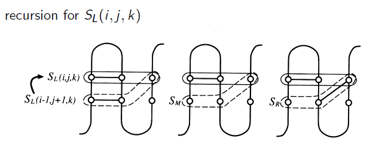

The algorithm by
Akutsu is the extension of Nussinov recursion with pseudoknot case. The simple pseduknot structure is the combination of two stem loops.
For finding a simple pseudoknot substructure whose endpoints are i0th and k0th residues, we consider triplets $(i,j,k)$ $(i0-1 <= i < j <= k <= k0 )$ instead of $(i,j)$.
The properties of $i0$ till $k_{0}$ in (A) exists $j'_{0}$ and $j_{0}$ with
(1) $j'_{0}$ and $j_{0}$ are in hairpins
(2) structure $[i_{0} .. j_{0}]$ and $[j'_{0} .. k_{0}]$ are stem loops
(3) list of such structures for sub sequences $i_{0} .. k_{0}$
we consider three types of triplets $SL(i,j,k)$, $SM(i,j,k)$, and $SR(i,j,k)$.
The recursions of triplets as follows:
$$SL(i,j) = \max \left\{ SL(i-1, j+1, k) , SM(i-1, j+1, k), SR(i-1, j+1, k) +1 \right\}$$
$$SR(i,j) = \max \left\{ SL(i, j+1, k-1) , SM(i, j+1, k-1), SR(i, j+1, k-1) +1 \right\}$$
$$SM(i,j) = \max \begin{cases} SL(i-1, j, k) , SL(i, j+1, k),\\ SM(i-1, j, k), SM(i, j+1, k) , SM(i, j, k-1) ,\\ SR(i, j+1, k) ,SR(i, j, k-1) \end{cases}$$
For example, the recursion of $SL(i,j,k)$ in the figure represents the recursion equations of $SL$.
Here, the overall complexity is $O(n^5)$ for time and $O(n^3)$ for space .
Finally, the traceback is visualized.
